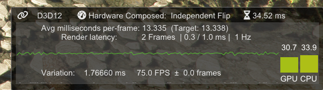
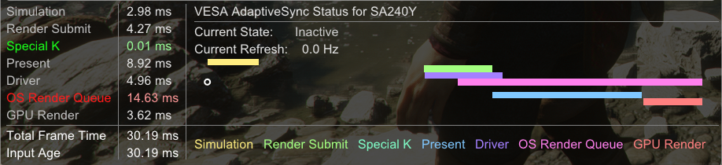
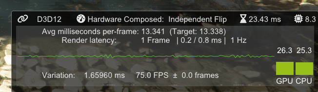
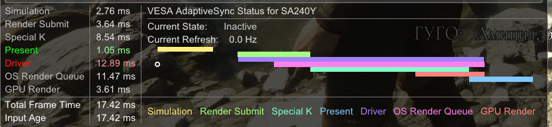
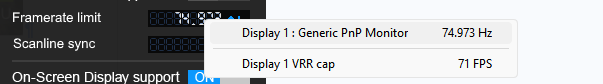
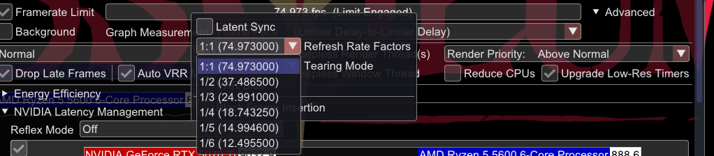
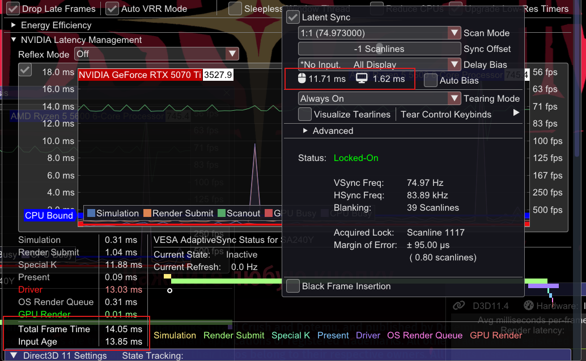
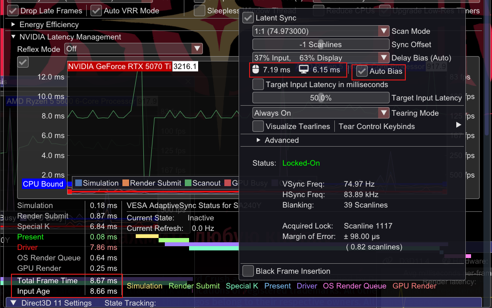
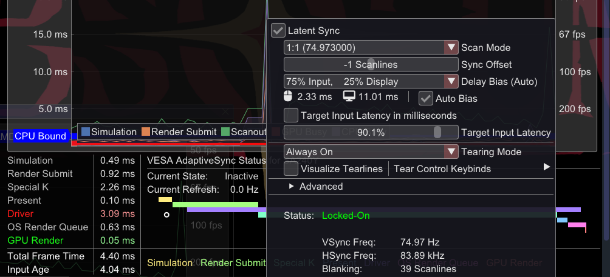
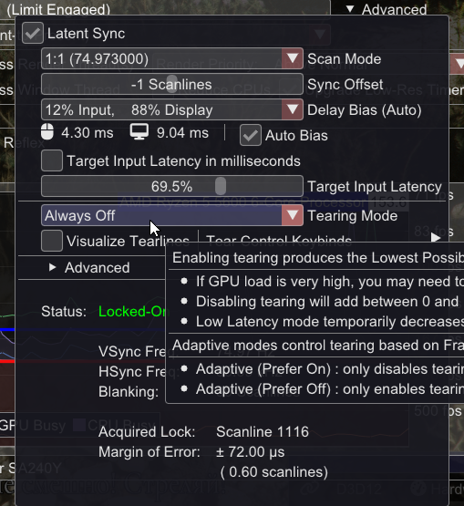

Fixed Refresh Rate Monitor
1. Для минимальной задержки
VSync ВЫКЛ + Reflex.
Если в игре нет Reflex, его можно добавить принудительно через RTSS или SpecialK для улучшения отзывчивости управления.
2. Для устранения разрывов изображения и повышения плавности
2.1 V-Sync + лимит FPS
Используйте лимит FPS с равным или дробным значением относительно герцовки монитора.
Для этого лучше всего подходят лимитеры RTSS (в режимах Async или Back Edge sync) или SpecialK (в режимах Low latency / Normal).
В чем проблема? Основная беда V-Sync – создание очереди кадров, что дает задержку минимум в 2+ кадра. Если же ограничить FPS так, чтобы видеокарта не успевала "забивать" этот буфер, мы получим задержку всего в ~1 кадр.
Значение лока должно строго соответствовать частоте обновления экрана (можно попробовать на 0.100 или 0.001 меньше) либо являться её целым делителем (например, Hz/2 или Hz/3). Установка произвольных ограничений провоцирует возникновение ошибок анимации (animation error).
Пример:


V-sync БЕЗ лока (Высокая задержка)


V-sync С локом (Низкая задержка)
В RTSS нажатием ПКМ по полю Framerate limit можно быстро выбрать точное значение герцовки:

В SpecialK нажатием ПКМ по ползунку фрейм-лимитера можно выбрать значение по герцовке и её дробные факторы:

2.2 SpecialK Latent Sync
Latent Sync – это функция, обеспечивающая условное отсутствие разрывов изображения. Она предлагает такую же или даже меньшую задержку ввода, чем VRR.
Это двухфазный ограничитель, который ожидает до и после вызова Present в игре. Время простоя ЦП распределяется между ожиданием периода вертикального гашения (для стабильности картинки без разрывов) и задержкой начала следующего кадра (для снижения инпут-лага).
Delay Bias: Этот параметр управляет балансом. Хотя по умолчанию значение равно 0, его можно настроить в пользу снижения задержки ввода, рискуя появлением периодических разрывов. Auto Bias — рекомендуемый режим, где SpecialK сам корректирует смещение (значение 50% обычно является безопасным).



Задержка 14мс без Delay Bias -> 8мс (50% Auto) -> 3мс (90% Auto)
2.3 Latent Sync + Allow Tearing OFF
Выключение Тиринга (схоже с включением V-Sync) при включенном Latent Sync дает гарантированную картинку без разрывов с минимальной задержкой в 1 кадр, которую можно дополнительно снизить через Delay Bias. Можно сказать, это "V-Sync на стероидах".
